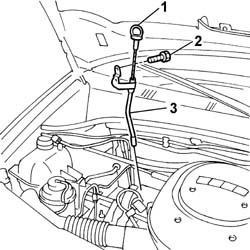
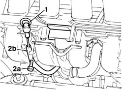
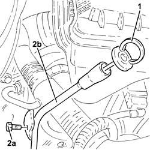
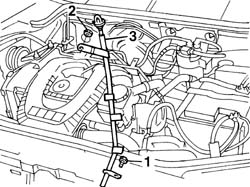
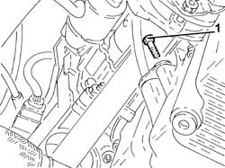
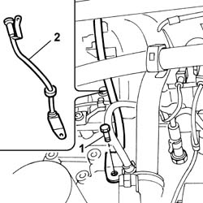
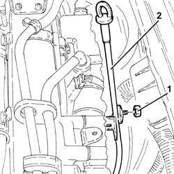

1084A16 oil dip stick pipe - r r
- Path
- Procedures > 10 ENGINE > 1084 ENGINE LUBRICATION > 1084A indicators/check devices > 1084A16 oil dip stick pipe - r r
- Kind
- repair procedure (removal / refitting; the operation number is the code)
- Applies to
- all engines; all production periods
- Interactive page
- https://sloeber94.github.io/elrnDB-fDbl/en/#/2584286
Applies to: all engines; all production periods
 Removing
Removing
 Refitting
RefittingOpen the bonnet lid.
1. Remove the engine oil dipstick from the tube.
2. Undo the bolts fixing the tube to the tappet cover.
3. Remove the engine oil dipstick tube, releasing it from the seal on the actual tube.

Applies to: all engines; all production periods
Removing
RefittingOpen the bonnet lid.
1. Remove the engine oil dipstick, withdrawing it from the rigid pipe.
2. Undo the top bolt (2a) securing the rigid pipe (2b) on the inlet manifold.

Applies to: all engines; all production periods
Removing
Refitting1. Withdraw the oil level dipstick.
2. Undo the bolts (2a) and remove the engine oil dipstick pipe (2b), after releasing the band from the electrical wiring.

Applies to: all engines; all production periods
Removing
RefittingPlace the vehicle on a lift.
Raise the vehicle.
7055B54 under-engine guard - r r
1. Undo the lower bolt of the engine oil dipstick tube.
Release the dipstick pipe from the connector on the alternator cooling sleeve.
Lower the vehicle.
2. Undo the upper nut securing the tube to the injection pump mount.
3. Remove the tube for the engine oil dipstick.

Applies to: all engines; all production periods
Removing
RefittingPosition the vehicle on the ramp.
Proceed with the removal 7055B54 under-engine guard - r r .
1. Undo the lower bolt for the engine oil dipstick pipe.

Applies to: all engines; all production periods
Refitting
RemovingFit the tube for the engine oil dipstick, fitting it in the housing and checking that the rubber seal on the tube is positioned correctly.
Tighten the bolt fixing the tube to the tappet cover.
Fit the engine oil dipstick in the tube.
Close the bonnet lid.
Applies to: all engines; all production periods
7055B54 under-engine guard - r r
1. Undo the bottom bolt on the engine block.
2. Remove the rigid pipe from the engine compartment.

Applies to: all engines; all production periods
Refitting
RemovingPlace the complete engine oil dipstick tube back in its housing and fix it using the bolt.
Fix the electrical wiring with the band on the engine oil dipstick tube.
Place the engine oil dipstick back in its housing.
Applies to: all engines; all production periods
Refitting
RemovingFit the engine oil dipstick pipe and tighten the upper nut.
Raise the lift.
Secure the dipstick tube to the alternator cooling sleeve.
Tighten the lower bolt.
7055B54 under-engine guard - r r
Lower the lift and remove the vehicle.
Applies to: all engines; all production periods
1. Undo the upper nut securing the engine oil dipstick tube.
2. Remove the tube for the engine oil dipstick after releasing from the electrical wiring/connections.

Applies to: all engines; all production periods
Refitting
RemovingCheck the condition of the rigid pipe.
Replace the rubber seal on the end of the pipe.
Fit the pipe into its seat.
Tighten the bottom bolt securing the rigid pipe to the engine block.
7055B54 under-engine guard - r r
Tighten the top bolt securing the rigid pipe to the inlet manifold.
Refit the oil level dipstick.
Close the bonnet lid.
Applies to: all engines; all production periods
Refitting
RemovingRefit the engine oil dipstick tube.
Secure the electrical wiring/connections to the oil dipstick tube.
Tighten the nut and bolt securing the engine oil dipstick tube.
Proceed with the refitting 7055B54 under-engine guard - r r .
Remove the car from the ramp.
Topics linked from this page (1)
Topics that link to this page (9)
- 1016B20 lh cylinder head extension - replace gasket
- 1016B22 lh cylinder head extension - r r with timing belt removed - replace gasket
- 1016B24 rh cylinder head extension - replace gasket
- 1036G10 camshaft controlling exhaust valves in top head - r + r with top head removed - includes replacement of top head
- 1036G20 camshaft controlling intake valves in top head - r + r with top head removed - includes replacement of top head if necessary
- 1056B60 single fuel manifold pipe, with injectors - r + r
- 1056B61 single fuel manifold with injectors - r+r with air conveyor/box removed
- 1072B10 inlet manifold - r + r and replace seal
- 1072B14 inlet manifold - r+r and replace seal with air conveyor/box removed